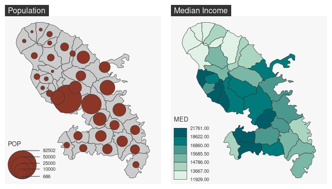
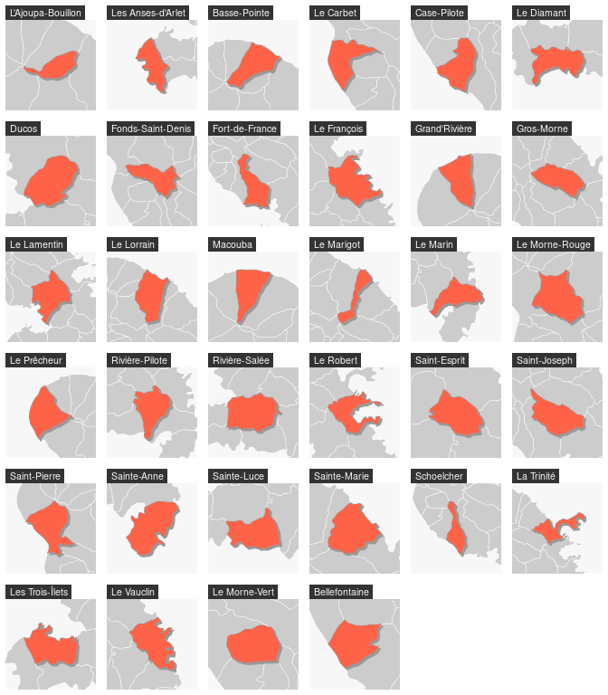

vignettes/web_only/how_to_create_faceted_maps.Rmd
how_to_create_faceted_maps.RmdTo plot several maps on the same figure, the user can use the
mfrow argument of the par() function before
plotting the maps. For example, use par(mfrow = c(1, 2))
(i.e. 1 row, 2 columns) to plot two maps side by side).
library(mapsf)
mtq <- mf_get_mtq()
# define the figure layout (1 row, 2 columns)
par(mfrow = c(1, 2))
# first map
mf_map(mtq)
mf_map(mtq, "POP", "prop")
mf_title("Population")
# second map
mf_map(mtq, "MED", "choro")
mf_title("Median Income")
When relevant the user can use a for loop.
# define the figure layout (6 rows and 6 columns)
par(mfrow = c(6, 6))
for (i in 1:nrow(mtq)) {
# center the map on a targeted municipality and its
# neighborhood (with mf_init() and its expandBB arg)
mf_init(mtq[i, ], expandBB = c(.3, .3, .3, .3))
# plot the municpalities
mf_map(mtq, border = "white", lwd = .5, add = TRUE)
# plot the shadow of the targeted municpality
mf_shadow(mtq[i, ], cex = .75, col = "grey60", add = TRUE)
# plot the targeted municipality
mf_map(mtq[i, ], col = "tomato1", border = "grey60", add = TRUE)
# add a title
mf_title(mtq[[i, "LIBGEO"]])
}